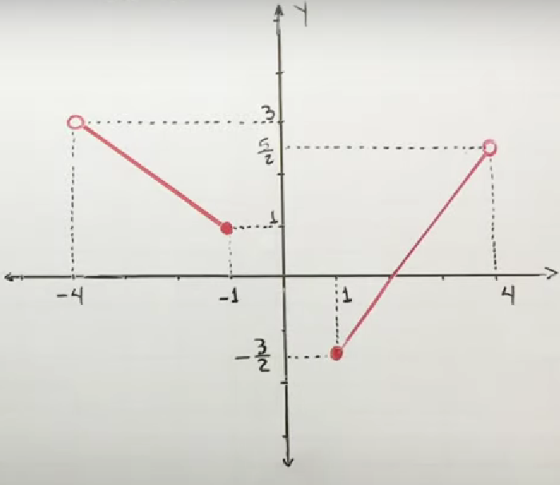
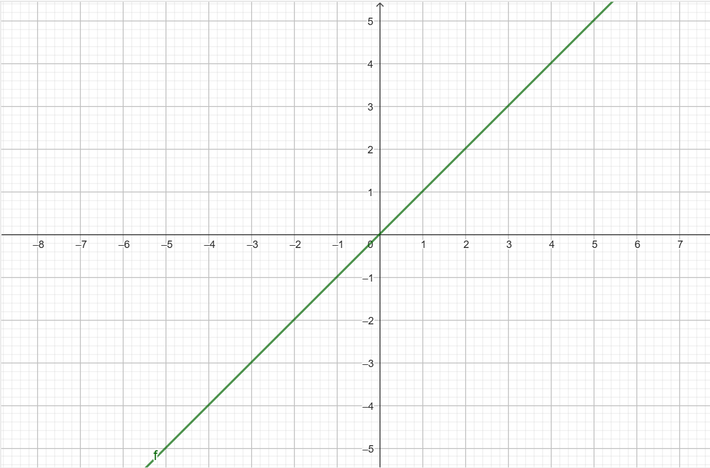
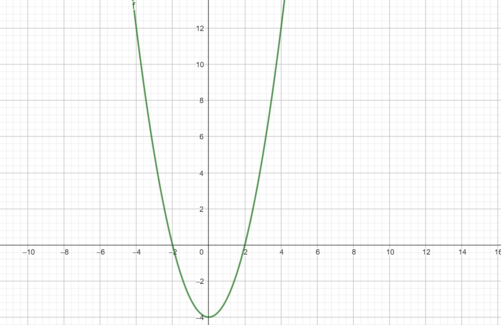
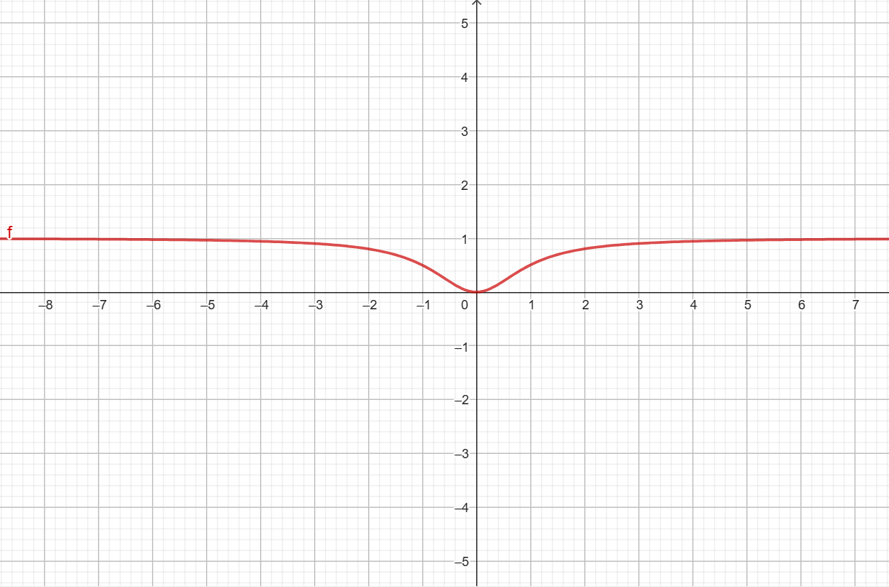
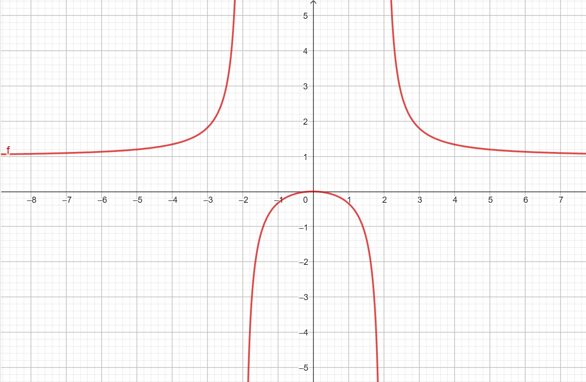

Cálculo gráfico del dominio y recorrido de una función
Ya sabemos qué son el dominio y recorrido de una función, pero entonces, si tenemos una función, ¿cómo calculamos qué valores admite como entrada y cuáles puede devolver como salida? Es decir, ¿cómo sabemos que cual es su dominio y cuál es su recorrido?
Para comprenderlo, vamos a comenzar estudiándolo con ejemplos gráficos, que siempre se ve mejor que con ejemplos analíticos.
Ejemplo 1 (GRÁFICO)
Consideremos la siguiente gráfica de una función:

Autoría: Óscar Gómez Palomares. ©
¿Cuál será su dominio y cuál su recorrido?:
DOMINIO
El dominio son todos los posibles 'x' que podemos insertarle a la función para que nos devuelva una imagen. Para calcularlo debemos observar el eje X y ver para qué valores la función tiene imagen. En este caso, vemos que los valores de 'x' admitidos por la función son los comprendidos entre el -4 (sin incluir) y el -1, y entre el 1 y el 4 (sin incluir), por lo que este sería su dominio.
Esto se representa como Dom f = (-4,-1] U [1,4)
RECORRIDO
El recorrido son todos los posibles 'y' que la función puede devolvernos ante un 'x'. Para calcularlo debemos observar el eje Y y ver qué valores de este contiene la función. En este caso, vemos que los valores de 'y' que puede devolver la función son los comprendidos entre -3/2 y 3 (sin incluir), por lo este sería su recorrido.
Esto se representa como Rec f = [-3/2, 3)
Ejemplo 2 (GRÁFICO)
Consideremos la siguiente gráfica de una función:

Autoría: Óscar Gómez Palomares. ©
¿Cuál será su dominio y cuál su recorrido? (Piensa que esto es un trozo de la gráfica, pero que la recta sigue hacia el infinito por ambos lados):
DOMINIO
El dominio son todos los posibles 'x' que podemos insertarle a la función para que nos devuelva una imagen. Para calcularlo debemos observar el eje X y ver para qué valores la función tiene imagen. En este caso, como la recta sigue hacia el infinito por ambos lados, significa que cualquier valor de 'x' es admitido por la función, por lo que su dominio va a ser cualquier número (admite cualquier valor de 'x').
Esto se representa como Dom f = ℝ
RECORRIDO
El recorrido son todos los posibles 'y' que la función puede devolvernos ante un 'x'. Para calcularlo debemos observar el eje Y y ver qué valores de este contiene la función. En este caso, como la recta sigue hacia el infinito por ambos lados, significa que cualquier valor de 'y' es imagen de alguno de 'x', por lo que su recorrido va a ser cualquier número (puede devolver cualquier valor de 'y').
Esto se representa como Rec f = ℝ
Ejemplo 3 (GRÁFICO)
Consideremos la siguiente gráfica de una función:

Autoría: Óscar Gómez Palomares. ©
¿Cuál será su dominio y cuál su recorrido? (Piensa que esto es un trozo de la gráfica, pero que la parábola sigue hacia el infinito por ambos lados):
DOMINIO
El dominio son todos los posibles 'x' que podemos insertarle a la función para que nos devuelva una imagen. Para calcularlo debemos observar el eje X y ver para qué valores la función tiene imagen. En este caso, como la parábola sigue hacia el infinito por ambos lados, significa que cualquier valor de 'x' es admitido por la función, por lo que su dominio va a ser cualquier número (admite cualquier valor de 'x').
Esto se representa como Dom f = ℝ
RECORRIDO
El recorrido son todos los posibles 'y' que la función puede devolvernos ante un 'x'. Para calcularlo debemos observar el eje Y y ver qué valores de este contiene la función. En este caso, vemos que la función devuelve imágenes desde el valor y=-4 hasta el infinito, por lo que este va a ser su recorrido.
Esto se representa como Rec f = [-4, +∞)
Ejemplo 4 (GRÁFICO)
Consideremos la siguiente gráfica de una función:

Autoría: Óscar Gómez Palomares. ©
¿Cuál será su dominio y cuál su recorrido? (Piensa que esto es un trozo de la gráfica, pero que la función sigue hacia el infinito por ambos lados):
DOMINIO
El dominio son todos los posibles 'x' que podemos insertarle a la función para que nos devuelva una imagen. Para calcularlo debemos observar el eje X y ver para qué valores la función tiene imagen. En este caso, como la función sigue hacia el infinito por ambos lados, significa que cualquier valor de 'x' es admitido por la función, por lo que su dominio va a ser cualquier número (admite cualquier valor de 'x').
Esto se representa como Dom f = ℝ
RECORRIDO
El recorrido son todos los posibles 'y' que la función puede devolvernos ante un 'x'. Para calcularlo debemos observar el eje Y y ver qué valores de este contiene la función. En este caso, vemos que la función devuelve imágenes solo entre 0 y 1 (sin tocar nunca a este), por lo que este va a ser su recorrido.
Esto se representa como Rec f = [0, 1)
Ejemplo 5 (GRÁFICO)
Consideremos la siguiente gráfica de una función:

Autoría: Óscar Gómez Palomares. ©
¿Cuál será su dominio y cuál su recorrido?:
DOMINIO
El dominio son todos los posibles 'x' que podemos insertarle a la función para que nos devuelva una imagen. Para calcularlo debemos observar el eje X y ver para qué valores la función tiene imagen. En este caso:
Dom f = (-∞, -2) U (-2, 2) U (2, +∞)
RECORRIDO
El recorrido son todos los posibles 'y' que la función puede devolvernos ante un 'x'. Para calcularlo debemos observar el eje Y y ver qué valores de este contiene la función. En este caso:
Esto se representa como Rec f = (-∞, 0] U (1, +∞)